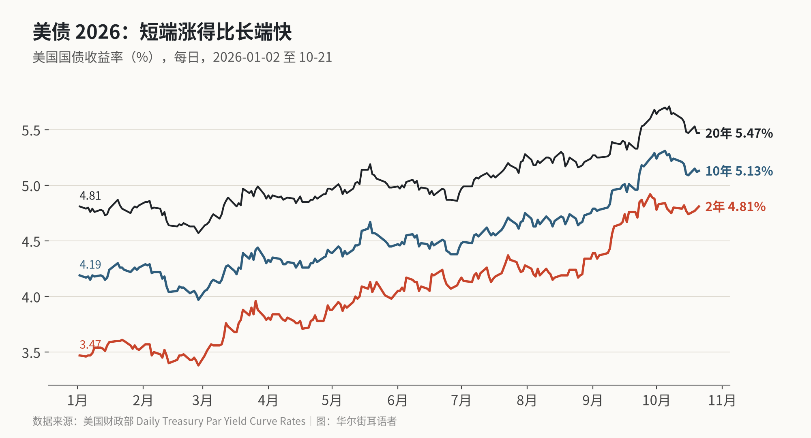
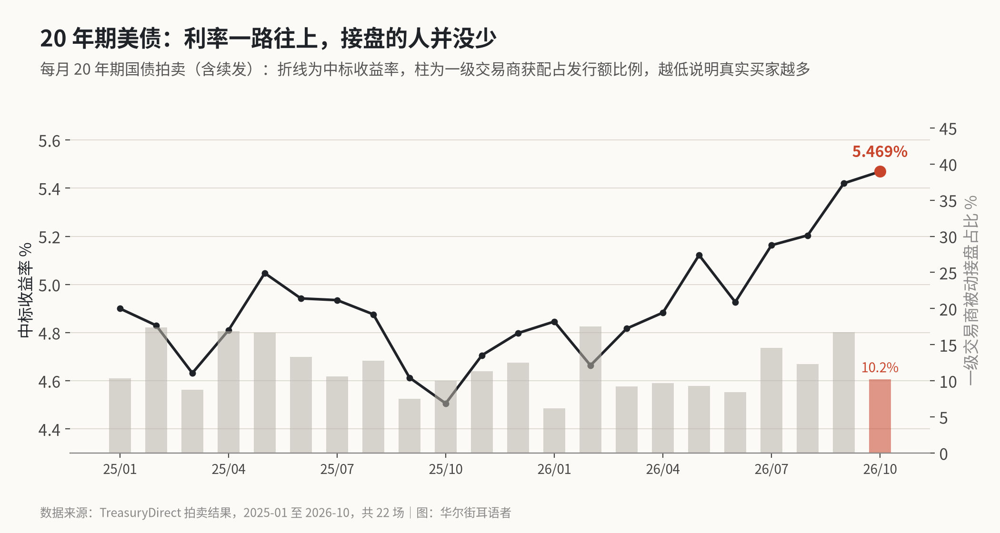

美债长端回落了 24 个基点，两年期却没动：债市比经济学家更鹰
10 月 7 日以来，20 年期美债收益率从 5.71% 退到 5.47%，两年期从 4.77% 涨到 4.81%。拿两年期去比联邦基金利率和路透调查里的“利率顶”，市场押的加息比经济学家多。
周三（10 月 21 日）的利率新闻很多：法国 10 年期国债收益率 24 年来第一次碰到 5%，美国 20 年期国债拍出 5.469% 的中标利率，布伦特原油收在 108.82 美元。标普 500 当天还涨了 0.58%。
单看标题，像是全球长债又在失控。我把美国财政部每天公布的收益率曲线拉出来，从年初画到 10 月 21 日，看到的情况不太一样：美国长端这两周其实在回落，没回落的是短端。
先看曲线
年初（1 月 2 日）美国两年期国债收益率 3.47%，10 年期 4.19%，20 年期 4.81%。到 10 月 21 日，分别是 4.81%、5.13%、5.47%。两年期涨了 134 个基点，10 年期涨了 94 个，20 年期涨了 66 个。今年涨得最凶的是短端。

高点出现在 10 月初。20 年期 10 月 7 日到了 5.71%，30 年期 5.67%，10 年期 10 月 5 日到 5.31%。路透说那几天长端收益率到了“数十年高位”，之后退了将近 25 个基点。我按财政部数据核了一下：20 年期从 5.71% 退到 5.47%，正好 24 个基点；10 年期从高点退了 18 个。
两年期没有跟着退。10 月 7 日 4.77%，10 月 21 日 4.81%，反而高了 4 个基点。两年期和 10 年期的利差，从 10 月 7 日的 51 个基点缩到 32 个。
两年期在押什么
两年期收益率大体反映市场对未来两年政策利率的平均预期，加一点期限溢价。美联储 9 月加息 25 个基点后，联邦基金利率区间是 3.75% 到 4.00%，中值 3.875%。两年期 4.81%，比当前中值高 94 个基点。
经济学家怎么看？路透 10 月 16 日到 20 日调查了 100 位经济学家：94 位认为 10 月 27 日到 28 日的会议按兵不动，100 位全部认为 12 月加息。对利率顶的判断，近六成认为是 4.00% 到 4.25%，也就是再加一次就停；92 位里有 38 位认为至少还要加两次，上个月这个比例只有五分之一。
把这两组数放在一起：就算按多数经济学家的利率顶 4.125%（区间中值）一直维持两年，两年期也只该在 4.1% 附近，加上一些期限溢价，离 4.81% 还差五六十个基点。这个缺口说明两件事至少有一件成立：要么市场押的加息次数比经济学家多，要么投资人要的期限溢价比平时高。这是我的粗算，没有用期限溢价模型，只说明方向。
路透那篇调查里，经济学家自己也偏向这一边。摩根士丹利首席美国经济学家 Michael Gapen 说，风险在于美联储“最终需要比我们预期的加得更多”。Kalshi 在 X 上说交易员押今年恰好加息两次，这是预测市场的数字，我没有找到美联储“警告年底前再加息”的原始出处，只能当作单一来源的说法。
20 年期拍卖：利率高，但接盘的人没少
BreakingAlert_ 在 X 上说，这次 20 年期拍卖的中标收益率是 1986 年 1 月以来最高。我能核到的是 TreasuryDirect 的拍卖记录：2025 年 1 月到今年 10 月一共 22 场 20 年期拍卖（含续发），10 月 21 日这场 5.469% 是最高的。20 年期国债 1986 年后停发，2020 年才恢复，“1986 年以来”的说法跟这个断档有关。
更值得看的是认购情况。这次发行 130 亿美元，认购倍数 2.73，前 21 场的平均是 2.63。一级交易商要兜底接走的比例是 10.2%，前 21 场平均 12.0%。交易商接得越少，说明真实买家越多。间接投标人（通常包括外国央行和各类基金）拿走了约 58%。

利率最高、需求不差，这两件事不矛盾。买家要的是更高的价格补偿，给到了，他们就买。所以这次拍卖说明的是长债的“价格”已经被抬上去了，不是没人要。
法国和原油
法国的问题是自己的。路透说，法国 10 年期收益率当天涨了 8 个基点，本周累计涨了 20 多个基点，是主要债市里周涨幅最大的；法德 10 年期利差 150 个基点，10 月初一度接近 160，是 15 年来最高。背景是预算迟迟谈不拢，加上街头抗议。法国超市集团家乐福因为抗议下调了业绩指引，当天跌了约 13%。
原油是全球共同的压力。布伦特 10 月 21 日收在 108.82 美元，WTI 97.15 美元；盘中布伦特一度站上 110 美元。Peter Schiff 在 X 上拿它和出口价格、生产者价格的环比涨幅一起，说通胀压力还在加速。他的年化算法有些激进，但油价确实是这一轮通胀预期的主要来源之一。
长债回落靠的是加息预期
美国长债这两周的回落，靠的是市场相信美联储会继续加息压通胀，而不是通胀本身退了。短端没退、曲线变平，就是这个意思。20 年期拍卖需求正常，说明 5.4% 以上的长债利率有人愿意买，短期内不太像要失控。
风险在两头。油价再上一个台阶，或者 10 月按兵不动之后通胀数据继续偏热，市场会把 12 月加 25 个基点改成 50 个，短端还要往上走。法国这种财政加政治的问题，会让欧洲的长债继续比美国难看。最近的两个检验点，是 10 月 28 日美联储会后声明里有没有提到 12 月，以及下一场 20 年期拍卖交易商的接盘比例会不会回到 15% 以上。
X 上怎么看
结论 · 偏空共识：2 位看多，7 位看空，2 位中性/分歧。多数人认为通胀和油价会让利率更久维持高位，少数人觉得市场已经对高收益率脱敏。
▲ 看多2 位
▼ 看空7 位
观点为 X 用户当日公开帖子的中文摘要，忠于原文但有删减；标「未核实」的为预测、个人推测或单一来源说法。立场为人工判断。
数据来源
- https://www.treasurydirect.gov/TA_WS/securities/auctioned?format=json&type=Bond&days=640
- https://www.investing.com/news/economy-news/fed-to-skip-october-but-raise-rates-again-in-december-nearly-all-economists-say-reuters-poll-4960095
- https://financialnewsletter.com/fed-to-skip-october/
- https://live.euronext.com/en/financial-news/stocks-rise-ai-led-earnings-frances-10-year-bond-yield-hits-5
- https://finance.yahoo.com/markets/world-indices/articles/french-bonds-lead-euro-zone-092141406.html
- https://www.cnbc.com/2026/10/21/france-protests-bonds-debt.html
- https://x.com/BreakingAlert_/status/2112957879393169856
- https://x.com/Kalshi/status/2112808606999671063
- https://x.com/PeterSchiff/status/2112801142644117944